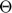

MAE 5803 - Homework #1 Problem #1
Tim Coon: 25, January 2017
Contents
- Second-Order Nonlinear State Equation:
- First-Order Nonlinear State Equations:
- Draw the phase portrait
- Plot the field of the phase portrait
- a) From the phase portrait, identify the singular points of the system and determine their types (stable node, unstable focus, etc.).
- First Singular Point
- Second Singular Point
- b) Obtain the linearized equations about the singular points of the system. Then, determine the eigenvalues of each linearized equation to determine the stability of the corresponding singular point.
- c) Draw also the phase portraits of the linearized equations. Does the phase portrait of the nonlinear system in the neighbothood of the singular points compare well with the phase portraits of the linearized equations?
- Linearized about the singular point at the origin
- Linearized about the singular point at (-3, 0)
clear; close all; clc; warning('off','MATLAB:ode45:IntegrationTolNotMet') % suppress ode45 warnings set(0,'defaulttextinterpreter','latex')
Second-Order Nonlinear State Equation:
First-Order Nonlinear State Equations:
Draw the phase portrait
Numerically integrate the state equation using ode45 starting at various points in the plane. The Plus (+) marks indicate starting points for each simulated trajectory.
tspan = [0 2]; figure(); hold on for i = -5:1:5 for j = -5:1:5 T0 = [i; j]; options = odeset('RelTol',1e-4,'AbsTol',1e-7); [t,T] = ode45(@P1stateEqn,tspan,T0,[],1); h = plot(T(:,1),T(:,2)); c = get(h,'color'); plot(T0(1),T0(2),'+','color',c); end end axis([-5 5 -5 5]) axis equal xlabel('$\Theta$') ylabel('$\dot{\Theta}$') title('Nonlinear system phase portrait') hold off

Plot the field of the phase portrait
[x1, x2] = meshgrid(-4:0.5:4, -4:0.5:4); x1dot = x2; x2dot = -0.6*x2 - 3.*x1 - x1.^2; figure() quiver(x1,x2,x1dot,x2dot,'AutoScaleFactor',5) axis([-5 5 -5 5]) axis equal xlabel('$\Theta$') ylabel('$\dot{\Theta}$') title('Phase portrait with gradients')

a) From the phase portrait, identify the singular points of the system and determine their types (stable node, unstable focus, etc.).
Reference Slotine, Section 2.5 There are two singular points.
First Singular Point
The first singular point is a stable focus at the origin. Use the Jacobian to linearize about the origin. Both eigenvalues have negative real parts, supporting the ID as a stable focus.
A1 = [0 1; -3 -0.6]; eValue1 = eig(A1)
eValue1 = -0.3000 + 1.7059i -0.3000 - 1.7059i
Second Singular Point
The second sigular point is a saddle point at (-3,0). Use the Jacobian to linearize about this point. One eigenvalue is positive and the other negative with no imaginary parts, supporting the ID as a saddle point.

A2 = [0 1; 3 -0.6]; eValue2 = eig(A2)
eValue2 =
1.4578
-2.0578
b) Obtain the linearized equations about the singular points of the system. Then, determine the eigenvalues of each linearized equation to determine the stability of the corresponding singular point.
See part a)
c) Draw also the phase portraits of the linearized equations. Does the phase portrait of the nonlinear system in the neighbothood of the singular points compare well with the phase portraits of the linearized equations?
Plot the same as nonlinear, but use linear equations in function file.
Linearized about the singular point at the origin
The phase portrait of the linearized system looks very similar to that of the nonlinear system near the -axis where the effects of the squared term are inconsequential. The linearized system is always stable, with trajectories tending toward the origin.
tspan = [0 2]; figure(); hold on for i = -4:1:4 for j = -4:1:4 T0 = [i; j]; [t,T] = ode45(@P1stateEqn,tspan,T0,[],2); h = plot(T(:,1),T(:,2)); c = get(h,'color'); plot(T0(1),T0(2),'+','color',c); end end axis([-5 5 -5 5]) axis equal xlabel('$\Theta$') ylabel('$\dot{\Theta}$') title('Linearized about the origin') hold off

Linearized about the singular point at (-3, 0)
The phase portrait of the linzearized system looks very similar to that of the nonlinear system near where the squared term is canceled by the term preceding it in the nonlinear first-order system.
tspan = [0 2]; figure(); hold on for i = -6:1:2 for j = -4:1:4 T0 = [i; j]; [t,T] = ode45(@P1stateEqn,tspan,T0,[],3); h = plot(T(:,1),T(:,2)); c = get(h,'color'); plot(T0(1),T0(2),'+','color',c); end end axis([-5 1 -5 5]) axis equal xlabel('$\Theta$') ylabel('$\dot{\Theta}$') title('Linearized about (-3,0)') hold off